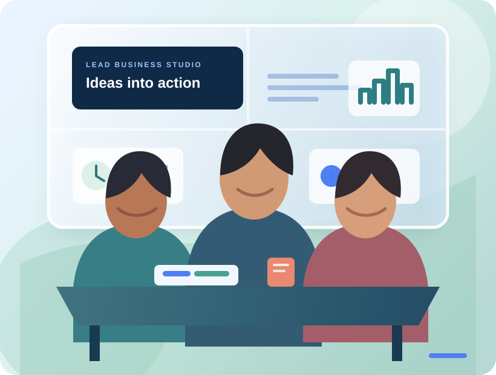

Management foundations
Build a strong base across core business functions and decision-making.
01 DEPARTMENT OF MANAGEMENT STUDIES
An MBA built around business practice, purposeful leadership and learning that travels beyond the classroom.

ABOUT THE PROGRAMME
Since 2010, LEAD’s Department of Management Studies has evolved its MBA around changing business needs. The programme brings management fundamentals together with digital capability, project work and leadership development.
Students learn in a fully residential setting in Dhoni, Palakkad, with opportunities to apply ideas through internships, live projects and social immersion.
CURRICULUM
LEAD reviews the curriculum for each incoming batch, drawing on autonomous status to keep learning connected to evolving markets and technology.
Build a strong base across core business functions and decision-making.
Use data, emerging technologies and new business models with confidence.
Work through cases, simulations and assignments grounded in current markets.
Strengthen collaboration, communication and accountability through practice.
REAL-WORLD EXPOSURE
Each placement is structured, mentored and assessed so students can carry classroom learning into live business challenges.
Experience business functions and understand how teams work across an organisation.
Take on domain assignments and analytical work with industry partners.
Contribute to consulting, strategy or entrepreneurship projects with real outcomes.
LEARNING WITH PURPOSE
Social immersion invites students to work with communities and social enterprises, analyse practical challenges and develop sustainable responses.
Work with organisations on current business questions and operating challenges.
Investigate contemporary management issues through structured academic inquiry.
Develop an entrepreneurial idea or move a venture concept toward validation.
CAMPUS & FACULTY
The Dhoni campus brings students and faculty together for continuous interaction, peer learning and a disciplined professional environment. Faculty combine strong academic credentials with experience across industry, teaching and research.
Build ideas through close peer collaboration and shared campus life.
Connect academic frameworks to projects, cases and industry perspectives.
Demonstrate skills through projects, analysis, presentations and continuous assessment.
CAREER DIRECTIONS
The MBA supports students looking toward leadership roles across organisations, consulting and analytics, digital business or entrepreneurship.
YOUR NEXT STEP
Explore admissions information or start your MBA application through the official LEAD portal.